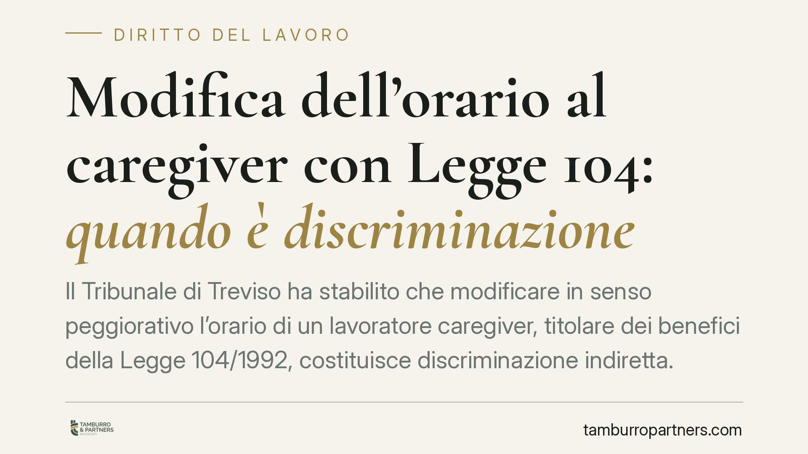

Modifica dell'orario al caregiver con Legge 104: quando è discriminazione
Il Tribunale di Treviso ha stabilito che modificare in senso peggiorativo l'orario di un lavoratore caregiver, titolare dei benefici della Legge 104/1992, costituisce discriminazione indiretta. L'azienda è stata condannata a ripristinare l'orario precedente e a risarcire il danno. Una pronuncia che chiarisce i limiti del potere organizzativo del datore di lavoro di fronte alle esigenze di assistenza familiare.

Il caso
Un lavoratore assisteva il figlio minore, affetto da una grave patologia oncologica, avvalendosi dei permessi e delle tutele previste dalla Legge 104/1992. L'azienda ha modificato l'articolazione dell'orario di lavoro in senso peggiorativo, rendendo di fatto più difficile la conciliazione tra attività professionale e assistenza al familiare.
Il Tribunale di Treviso, con pronuncia del 18 marzo 2026, ha qualificato la condotta come discriminazione indiretta, ordinando il ripristino dell'orario precedente e il pagamento di un risarcimento in favore del lavoratore.
Inquadramento normativo
La Legge 104/1992 riconosce a chi assiste un familiare con disabilità grave (il cosiddetto *caregiver*) una serie di tutele, tra cui i permessi retribuiti e la possibilità di scegliere, ove possibile, la sede di lavoro più vicina al domicilio dell'assistito (art. 33).
Il concetto di discriminazione indiretta è definito dal D.lgs. 216/2003, che ha recepito la direttiva europea 2000/78/CE in materia di parità di trattamento in ambito lavorativo. Si ha discriminazione indiretta quando una disposizione, un criterio o una prassi apparentemente neutri mettono una persona in una posizione di particolare svantaggio rispetto ad altre, senza che ciò sia oggettivamente giustificato da una finalità legittima perseguita con mezzi appropriati e necessari.
In questo quadro, una decisione organizzativa formalmente rivolta a tutti i dipendenti può risultare discriminatoria se, in concreto, penalizza chi si trova nella condizione tutelata di caregiver. Il datore di lavoro conserva il proprio potere organizzativo, ma deve esercitarlo bilanciandolo con le esigenze di assistenza protette dalla legge.
Perché la pronuncia conta
La sentenza si inserisce in un orientamento che valorizza la protezione sostanziale, e non solo formale, del lavoratore che assiste un familiare fragile. Il punto centrale è che non serve dimostrare un intento discriminatorio del datore di lavoro: rileva l'effetto concreto della decisione.
Se la modifica dell'orario produce uno svantaggio specifico per il caregiver, spetta all'azienda dimostrare che la scelta rispondeva a una reale esigenza organizzativa e che non esistevano soluzioni meno gravose. In assenza di questa prova, la condotta viene qualificata come discriminatoria.
Si tratta di un'inversione dell'onere della prova che rafforza la posizione del lavoratore in giudizio.
Implicazioni pratiche
Per il lavoratore caregiver, la pronuncia conferma che una variazione peggiorativa dell'orario non è automaticamente legittima solo perché rientra nel potere direttivo dell'azienda. Se compromette la funzione di assistenza, può essere contestata.
Per il datore di lavoro, il messaggio è chiaro: prima di modificare condizioni contrattuali che incidono su un dipendente in condizione protetta, occorre valutare l'impatto concreto e documentare le ragioni organizzative della scelta. Una motivazione generica non regge.
È opportuno ricordare che le tutele della Legge 104 non attribuiscono al lavoratore un diritto illimitato a mantenere immutate le proprie condizioni, ma impongono al datore di lavoro un onere di giustificazione più stringente quando la modifica peggiora la conciliazione con l'assistenza.
Cosa fare in concreto
- Documenta la tua condizione di caregiver: conserva la certificazione della disabilità grave del familiare e i provvedimenti aziendali che riconoscono i benefici della Legge 104.
- Metti per iscritto la contestazione: se ricevi una modifica peggiorativa dell'orario, comunica formalmente al datore di lavoro l'impatto sulla tua attività di assistenza, chiedendo le ragioni organizzative della decisione.
- Raccogli le prove dello svantaggio concreto: annota orari, spostamenti e turni di assistenza per dimostrare l'effetto penalizzante della variazione.
- Verifica l'esistenza di alternative: valuta se erano disponibili soluzioni organizzative meno gravose, elemento decisivo nel giudizio di proporzionalità.
- Agisci nei termini: le azioni contro la discriminazione seguono procedure specifiche; consigliamo di rivolgersi tempestivamente a un professionista prima di lasciar consolidare la nuova situazione.
Ogni situazione va valutata sulla base delle circostanze specifiche del rapporto di lavoro e della patologia del familiare assistito.
---
*Contributo informativo a cura di Tamburro & Partners - Avv. Giuseppe Tamburro. Non costituisce parere legale.*
Ogni storia di lavoro ha i suoi tempi.
Se gestisci HR e vuoi un confronto su contenzioso, ispezioni o licenziamenti, scrivi allo studio. Ti rispondiamo entro un giorno lavorativo.